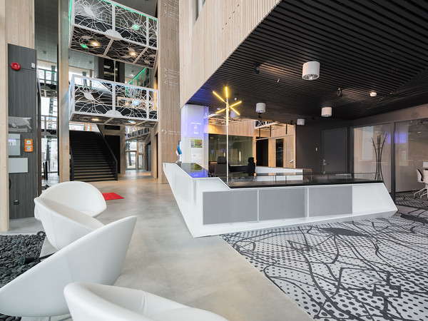
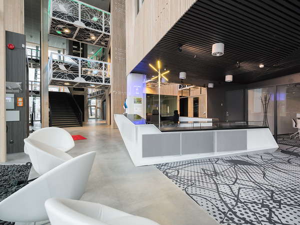

Tark Maja
Mugav, säästlik ja turvaline Meie paigaldatud nutikodu tehnoloogiad tagavad mugavuse, energiatõhususe ja meelerahu, aidates kaasa keskkonnahoidlikumale tulevikule. Energiasääst küttelt ja valgustuselt Väiksemad elektriarved Valve ja tuleohutus Kaugjuhtimine telefoni äpist

Tänapäeval on kombeks kasutada tehnoloogiat igal pool, kus võimalik, sest see muudab meie elu lihtsamaks ja mugavamaks. Tehnoloogia kasutamine jõudnud nii kaugele, et paljud kodud on targad ehk täis tehnoloogiat, mida kontrollitakse häälkäsklustega võи rakenduste abil telefonis. Igasugust tehnikat võи tehnoloogiat kasutades peab arvestama, et eelistega käivad kaasas ka puudused, mis võivad mitte ainult tüli teha, vaid muudavad mõne seadme kasutamise võimatuks. Seega on oluline teada, mis on targa maja eelised ja puudused.
Mikrokliimat
Ruumide mikrokliima Ühiskondlike ja eluruumide mikrokliima avaldab arvestatavat mõju meie töövõimele, aga ka tervislikule seisundile üldisemalt. Muudatused ruumide õhukeskkonnas toimuvad vastavalt kliimaseadmete töörežiimide vahetumisele. Kütte- ja ventilatsiooniseadmed, valgustus- ning muud seadmed – kõik see kokku avaldab lõppkokkuvõttes teatavat mõju inimesele, tema enesetundele, ning lõpuks ka tervisele. Samas muutuvad seadmed aga üha keerukamaks. Automatiseeritud süsteemid võimaldavad mitte ainult teostada vahetut kontrolli seadmete töö üle ning neid juhtida, vaid samaaegselt hoolitsevad ka meie tervise eest. Andurite vahendusel seiratakse õhu seisundit ruumis, ning juhtimispaneeli kaudu toimub õhukonditsioneeride, ventilatsiooni õhu juurdevoolu, põrandakütte ning kütteseadmete töörežiimide korrigeerimine. See tähendab, et kliima kohandatakse automaatselt inimese vajadustega, lähtuvalt eelnevalt süsteemile ette antud parameetritest. Nii toimides võimaldab kliimaseade järgmist. Õhu kvaliteedi juhtimine vastavalt ilmale ning päevaajale. Siseruumide õigeaegne tuulutamine kütte juhtimise ning akende avamise teel. Põrandakütte töö juhtimine. Igas eraldi ruumis optimaalse temperatuuri ning niiskuse taseme tagamine. Näiteks toiduainete hoiustamiseks mõeldud ruumi sisekliimale on täiesti individuaalsed nõuded, mis erinevad suuresti nõuetest elutoa või köögi või muu ruumi mikrokliimale. Ruumi temperatuuri ja niiskuse, värske õhu juurdevoolu intensiivsuse, õhu puhastamise ning osoneerimise süsteemide juhtimine. Igas ruumis peab olema igale pereliikmele enim sobiv mikrokliima, arvestades ruumi paiknemist majas: ruumi asukoht maja põhja- või lõunaosas nõuab samuti individuaalset juhtimislähenemist. Lastetoas on tuuletõmbus lubamatu, magamistuba peab olema soe ning vannitoa põrand peab olema aegsasti soojenenud, ning pole vajadust selle pidevalt soojana hoidmises. Seega süsteemide juhtimine peab olema optimaalne tagamaks energiasäästu. Süsteemi seadistamine varieerub sõltuvalt pere või kollektiivi elurütmist. Tööruumide kütmine nädalavahetuseti väheneb või lakkab sootuks. Suvila autonoomne küttesüsteem aga – vastupidi, lülitub sisse nädalavahetuseks. Katel lülitub sisse või läheb üle vähese tarbimise režiimile kaugjuhtimise teel. Süsteeme ratsionaliseeritakse säästlikkuse ning elutingimuste parendamise parima kombinatsiooni saavutamiseks. Eelkõige puudutab see vee- ja elektrivarustust ning kütet.

Miks Tark maja?
Tark kodu kasutab elektroonikat või tehnoloogiat, millega kontrollitakse või automatiseeritakse kodus mingisugused tegevused. Targad kodud suhtlevad läbi keskse sõlmpunkti, mis on kogu operatsiooni aju. Seade võib olla temperatuurisensor, termostaat ukse ja akna sensor, kaamera vms. Targad kodud on täis tehnoloogiat, mis muudavad paljud igapäevased tegevused lihtsaks, säästes sellega aega ja energiat. Siiski võivad kaasneda ka probleemid, mida tavalises kodus pole.

Valgustid ja valgusalikad
Valgustuse juhtimine.Mis võiks olla „targa maja“ intellektuaalsuse veel ilmekamaks väljenduseks, kui valgustuse tark juhtimine? „Targa maja“ valgustust võib nimetada tõesti arukaks ning seetõttu ka säästlikuks. Korteri, eramu või kontori elektrienergiat kasutatakse maksimaalse säästlikult, vältides ebaratsionaalset raiskamist. Automatiseeritud valgustuse juhtimise süsteemi eeliseks on võimalus lülitada vajaliku tugevusega tuled sisse või välja just seal, kus see on tõesti vajalik, toetudes hämaraandurite ja taimerite andmetele. Erinevad valgusstseenid pakuvad laialdasi loomingulise lähenemise võimalusi. Lisaks on saadaval pererahva kodus viibimise imitatsiooni funktsioon. nagu kodukino, valgustuse, veevarustuse, videovalve süsteemi, kliimaseadme, valve- ja tuletõrjesignalisatsiooni, elektrivarustuse, gaasivarustuse, turva ning multiroom seadmete ühte komplekssesse süsteemi ühendamine. Vaatleme nüüd igat punkti eraldi ning selgitame välja, milliseid funktsioone on kaasaegsed automatiseerimise süsteemid üleüldse võimelised meie igapäevaelus üle võtma.
 

Autorid
Zinaida Romanova ja Ilona Žakovitš